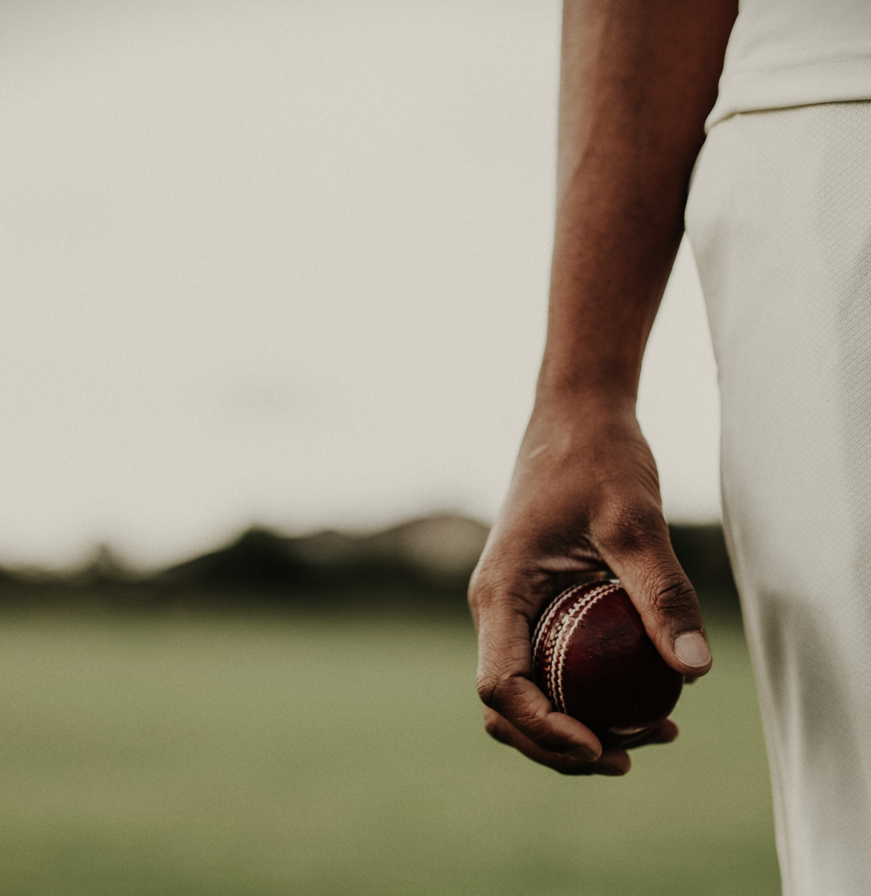

ADELAIDE STRIKERS
ABOUT :
The Adelaide Strikers were formed in 2011, as a result of the formation of the Big Bash League. When the competition was first formed, each team had an opportunity to sign up players and build their lists. The contracting window opened on 30 June 2011 at 9 am and closed on 22 July 2011.
The Adelaide Strikers are an Australian professional Twenty20 franchise cricket team based in Adelaide, South Australia that compete in the Big Bash League (BBL). Their home ground is the Adelaide Oval, and they play in a cornflower blue uniform. The Strikers were formed in 2011 to play in the BBL, succeeding the Southern Redbacks, who played in the now-defunct KFC Twenty20 Big Bash competition. Their sole victory in the BBL came in 2017–18.
Over their 11-year history in the BBL, they have had many effective and popular players on their team, from all-rounders such as Johan Botha, Michael Neser, Kieron Pollard, Ryan ten Doeschate and Chris Jordan, to high-scoring batsmen Travis Head, Colin Ingram, Mahela Jayawardene, Jonathan Wells, Michael Klinger and Jake Weatherald, to effective bowlers Ben Laughlin, Billy Stanlake, Rashid Khan, Peter Siddle, Adil Rashid and Kane Richardson, and finally keepers Alex Carey and Tim Ludeman.

HISTORY :
The Adelaide Strikers were formed in 2011, as a result of the formation of the Big Bash League. When the competition was first formed, each team had an opportunity to sign up players and build their lists. The contracting window opened on 30 June 2011 at 9 am and closed on 22 July 2011. Each team was allowed to sign up to 18 players, including up to two from overseas. The team's inaugural captain was South Australia captain, Michael Klinger, and the inaugural coach was Darren Berry, the then coach of the Southern Redbacks.
2014-15 Johan Botha continues as the captain of the side. Adelaide strikers finish at the top of the table at the end of the league stage. Adelaide Strikers come very close to winning but the title remains elusive and they finish 3rd. 2015-16 Change of leadership as Brad Hodge takes on charge. Adelaide Strikers finish at the top of the table in league stage for the second consecutive time. The results are exactly the duplicate of the last season as Adelaide Strikers finish 3rd again, for the second consecutive time. 2016-17 A disappointing year for the Adelaide Strikers as they finish 6th. 2017-18 Travis Head and Colin Ingram share captainship this season. Adelaide Strikers finally get their hands on the Big Bash League Trophy as they become the champions for the first time after defeating Hobart Hurricanes in the finals by 25 runs. 2018-19 The 2018-19 was extremely disappointing for the Strikers as they failed to qualify after finishing 7th on the table after the league stage. 2019-20 After finishing third on the table at the end of the league stages, Adelaide Strikers got knocked out in the playoffs.
PLAYERS
TRAVIS HEAD
BATTER
ALEX CAREY
WICKETKEEPER
HARRY CONWAY
BOWLER
JAKE WEATHERALD
BOWLER
LIAM O CONNOR
BOWLER
LIAM SCOTT
ALLROUNDER
MATT SHORT
BATTER
PETER SIDDLE
BOWLER
RASHID KHAN
BOWLER
RAYAN GIBSON
BATTER
WES AGRAR
BOWLER
Adelaide Strikers Sponsors
Privacy Policy Collection Statement Teams and Conditions Conditions Competitions Careers Contact
Ⓒ Adelaide Strikers 2022